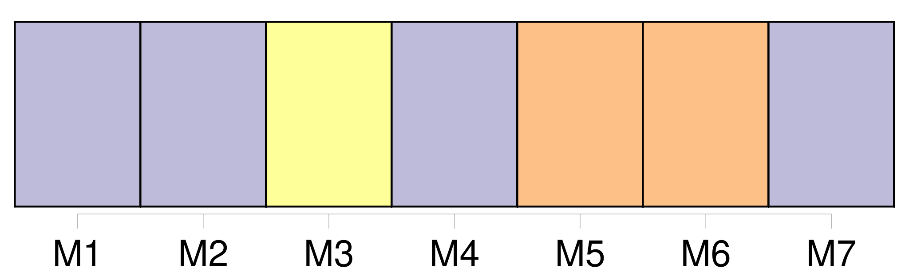
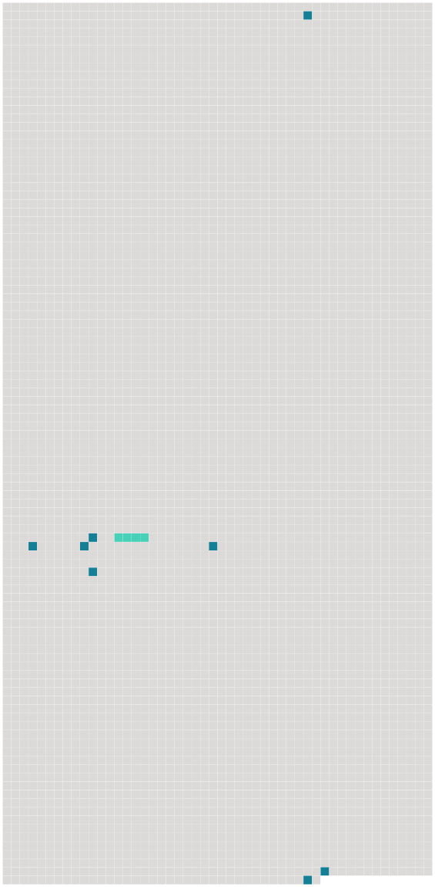

Longueur nb maillons : 9 mentions |
 |
Doué d'une belle figure, d'une haute stature, assez vain de sa personne, très ami du « bon ton », il tenait à ce qu'on lui rendît des honneurs, à ce qu'on recherchât son commerce, mais il faut croire que les démonstrations amoureuses de sa propre femme l'impatientaient, car, pour s'y soustraire, il prétextait plus souvent qu'il n'eût été nécessaire, des affaires l'appelant à son vignoble de [Lalex] , près Vevey. [131 phrases]
» « Depuis que mon Père fut veuf, nous dit Rosalie, il continua d'aller à [Lalex] tous les automnes. Il [y] faisait des parties de plaisir avec ses amis et sa société, et il [y] menait ses quatre enfans. [4 phrases] Ces heureux momens de l'automne où nous étions réunis à nos frères et à notre Père étaient attendus et promis comme une récompense, et nous ne quittions jamais [Lalex] sans regrets. [71 phrases]
»
Empruntons ici une page au cahier vert : |
 |
Il est possible de télécharger la ressource sur la page Ortolang |
Si vous avez des questions ou vous voyez des erreurs, merci d'envoyer un mail à silvia.federzoni89@gmail.com |